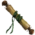
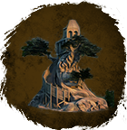

Свиток телепортации
Предметы / Ресурсы
Открыть в интерактивной вики →
| Вес | 1 |
|---|---|
| Цена | 0 |
Описание
Дает возможность пользоваться

в гильдии.| Позволяет пользоваться телепортационной башней гильдии. |
Применение
|
Способы получения
|